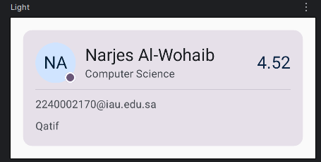
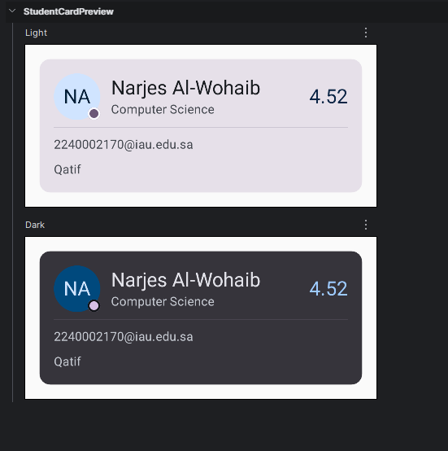
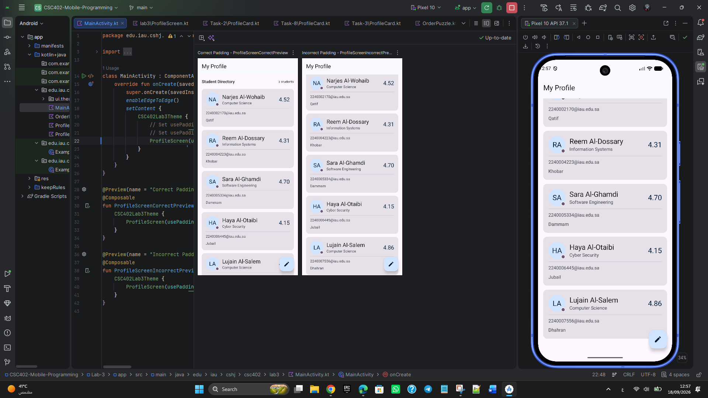
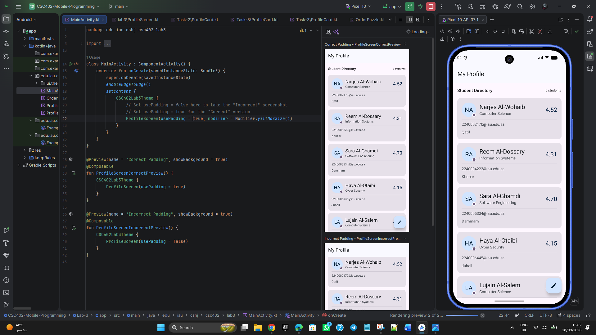
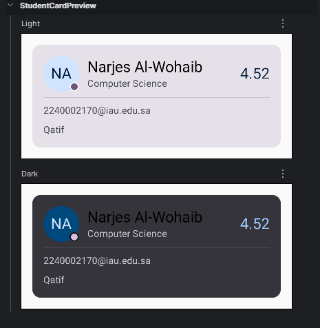

Name: Narjes Al-Wohaib
Student ID: 2240002170
Course: CSC 402 - Mobile Application Development
Lab: Lab 3
| Chain | Prediction | Observed Result |
|---|---|---|
| Chain A .background(Color).padding(24.dp) |
Chain A -> Result 1 | Chain A -> Result 2 |
| Chain B .padding(24.dp).background(Color) |
Chain B -> Result 2 | Chain B -> Result 1 |
| Chain C .clip(Shape).background(Color).padding(24.dp) |
Chain C -> Result 3 | Chain C -> Result 3 |
Tap-target prediction:
.clickable { }.padding(16.dp)
will respond in the padded area.
Explanation of Phases: In Jetpack Compose, modifiers are resolved sequentially across three phases: composition, layout, and drawing. During the composition phase, the modifier chain wraps the composable layout node in sequence. During the layout phase, parent constraints flow downwards and child sizes flow upwards step-by-step through the modifiers, meaning padding expands or limits the bounds prior to or following adjacent layout steps. During the drawing phase, canvas drawing operations (like backgrounds) and touch target click listeners operate directly on the specific layout dimensions established at that exact position in the modifier chain.
The verticalArrangement property on a Column determines how children are distributed or spaced along the container's main vertical axis, whereas verticalAlignment on a Row positions children cross-axially (sideways relative to the Row's main horizontal flow). Changing the outer Column to a Row without modifying other properties would trigger a compilation error because verticalArrangement is not a valid parameter for a Row layout. If compiled, it would cause all child elements to lay out horizontally side-by-side, entirely disrupting the intended vertical screen structure.
The original prediction was Chain A -> Result 1, Chain B -> Result 2, and Chain C -> Result 3, while the verified correct answer is Chain A -> Result 2, Chain B -> Result 1, and Chain C -> Result 3. During the composition phase, modifiers build an ordered sequence of wrappers around the layout node. In the layout phase, size definitions and parent-child constraints pass through this wrapper sequence step-by-step. Finally, the drawing phase applies visual decorations like backgrounds and input bounds according to the precise dimensions established at that specific position in the chain.
A composable function returns Unit because it describes the user interface structure declaratively by emitting nodes directly into the composition tree rather than generating and returning standalone widget objects. If Text returned a mutable widget object, developers would have to retain, manipulate, and update that object instance manually, breaking the core functional and declarative paradigm of Jetpack Compose. This composable code runs within the application layer of the Android software stack, utilizing the framework's runtime and foundation libraries.
Nothing broke when I first switched to dark mode because the card was already using MaterialTheme color roles instead of fixed colors. To verify this, I temporarily replaced the student-name color with Color.Black. In the dark preview, the name became difficult to read against the dark surface, showing why MaterialTheme.colorScheme.onSurface is needed.
When innerPadding was ignored, the content area was drawn starting from the absolute top-left edge of the screen, causing the top elements of the profile view to be completely obscured by and overlap with the TopAppBar. Scaffold provides a standardized, structural container that manages slots for core Material Design components like app bars, snacks, and floating action buttons, calculating safe screen inset padding values. It cannot apply this padding automatically because developers need the flexibility to create custom immersive or edge-to-edge experiences, such as scrolling content behind a translucent top bar.
The source color #0B2545 serves as the primary brand color (primaryLight) within the application's light color palette configuration. The decision in Tasks 5 and 6 to completely abstract colors and typography away from fixed values and instead reference semantic tokens like MaterialTheme.colorScheme.primary inside the StudentCard enabled it to remain completely unchanged. Because the card dynamically queries the active theme provider, it adapts automatically when the top-level theme switches between light and dark palettes.






Q4 verification — temporary hard-coded Color.Black makes the student name difficult to read in dark mode.
Date: 18 September 2026
Tools Used: ChatGPT, Android Studio Gemini
Nature of Use: AI tools were used during the completion of this lab and its documentation. ChatGPT and Android Studio Gemini provided guidance on understanding lab requirements, checking project file integrity, and assisting with general code/project cleanup. Additionally, they offered git/repository organization guidance, report formatting for the HTML write-up, and verification of semantic Material Theme 3 color role implementations across different task stages.
Verification: All responses and modifications were manually cross-checked with the functional project source code in the repository to ensure complete alignment with actual project behavior.